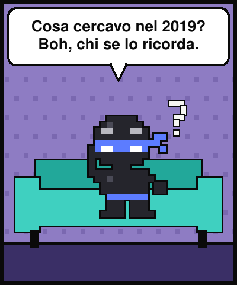
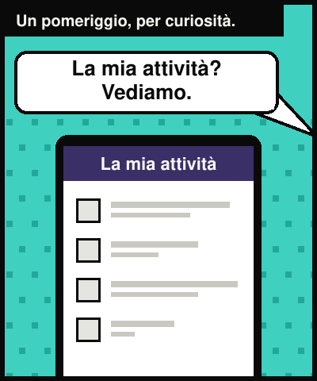
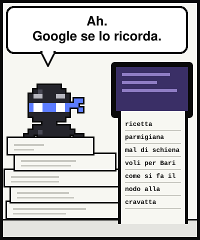
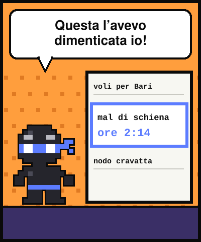
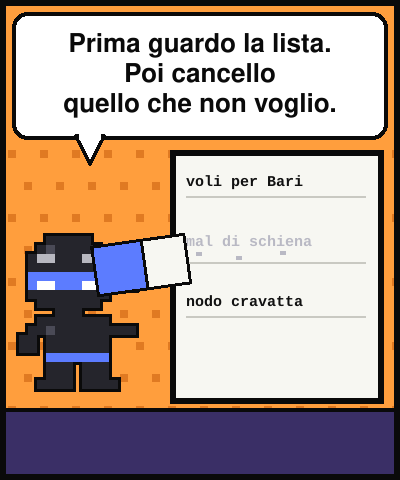
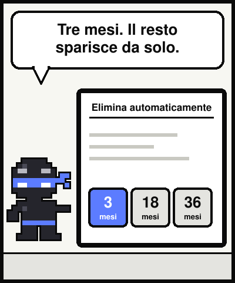
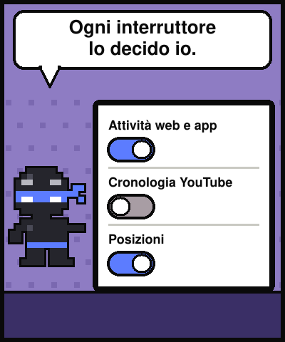
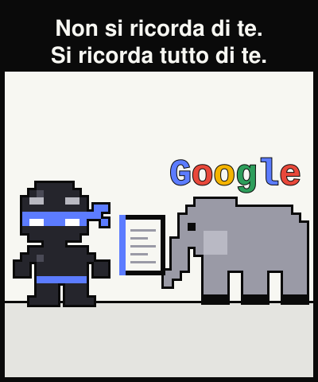

Lezione dal 2077 · n.003
C'è una pagina che contiene ogni cosa che hai cercato, guardato e chiesto. Non è di un hacker: è tua, ed è aperta.








Tre anni fa, alle due di notte, ho cercato una diagnosi per la mia spalla. L'avevo dimenticata. Io.
Apro la pagina La mia attività: c'è tutto, con data, ora e minuto.
Si chiama Attività web e app. Se è accesa, Google conserva ricerche, video e domande all'assistente. Non è nascosto: è nelle impostazioni.
Puoi dare una scadenza: 3, 18 o 36 mesi. Alcune cose, come posizione e IP, spariscono dopo 30 giorni.
«Google non si ricorda di te. Si ricorda tutto di te. Sono due mestieri diversi.»